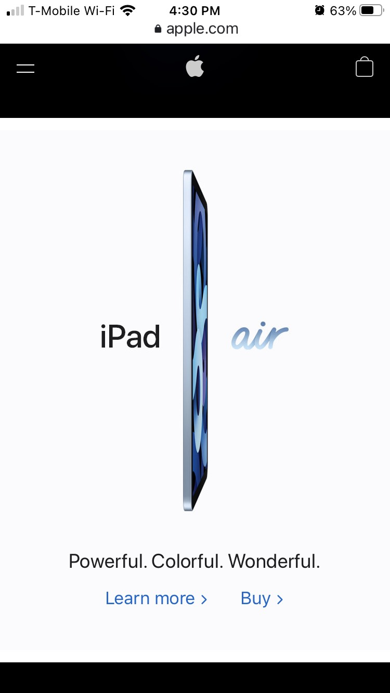
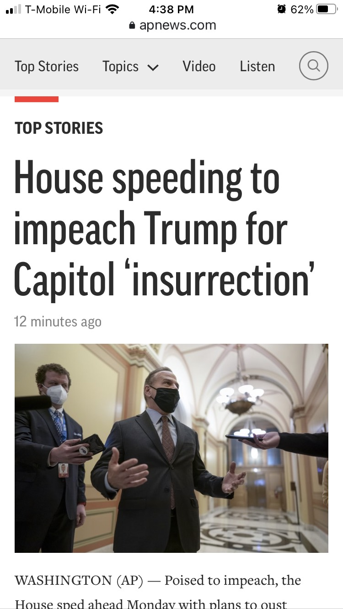

White Space and Clean Design
Apple
Apple has often used whitespace to emphasize the visual simplicity and minimilism of their products. The main page of apple.com has 5 ads for new products, and each separate ad uses whitespace excellently, whether that white space is actually white or black. There is a picture, a label, very limited text and simple buttons to either "learn more" or "buy". Even the header has a great use of whitespace - a solid black rectangle with Apple's minimal logo in the middle.
PARC: Alignment
Alignment is how elements are placed on a page, and Facebook has excellent alignment. Each profile picture, name, and post line up. Both nav bars, though containing a different number of items (one 6 items and one 3 items) still align with each other. If the page was printed, you could draw grids and everything would have an exact place within that grid.
Visual Hierarchy
Associated Press
AP's website, both mobile version and desktop, is well versed in the art and science of visual hierarchy. The main photo on the page is larger than all the others, with the caption of that picture in a larger font than other captions. After seeing the picture and headline, next your eye sees that it is a "top story", emphasized in all caps with a red line above. If you scrolled down, there would be a list of other news articles with a picture, but none as large as the leading story.